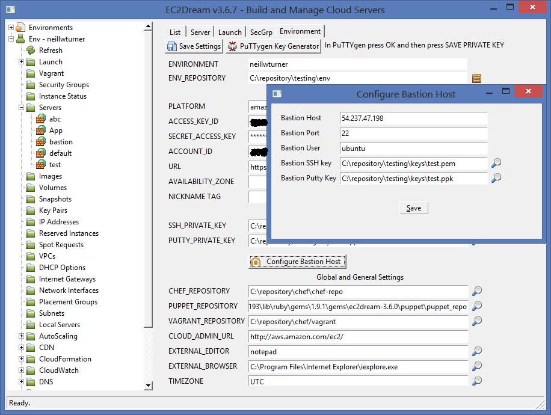
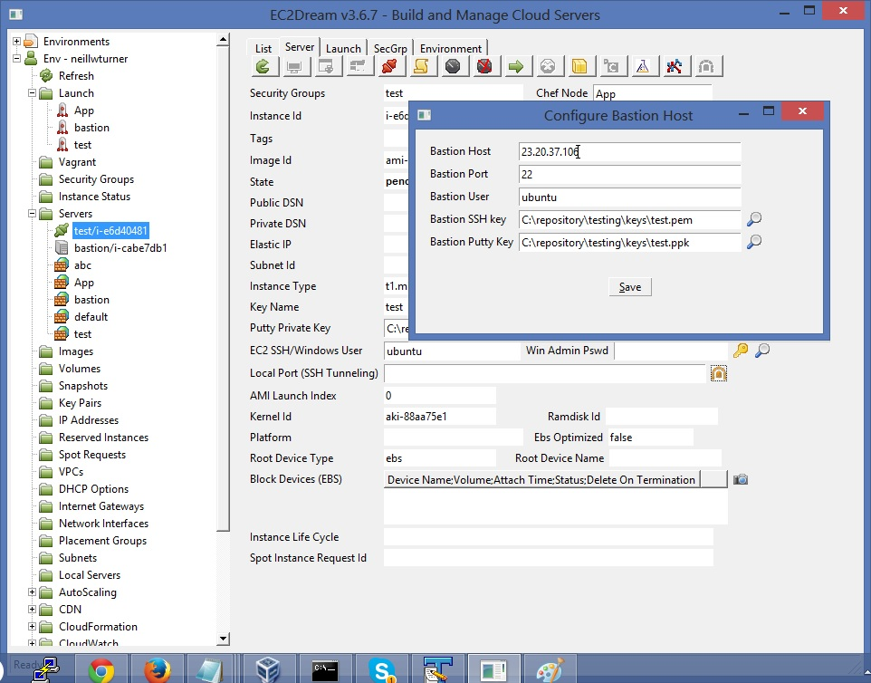
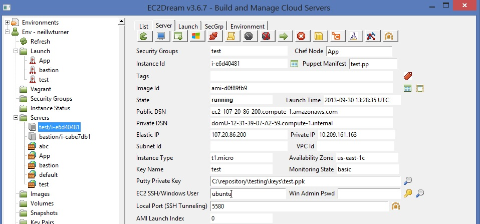
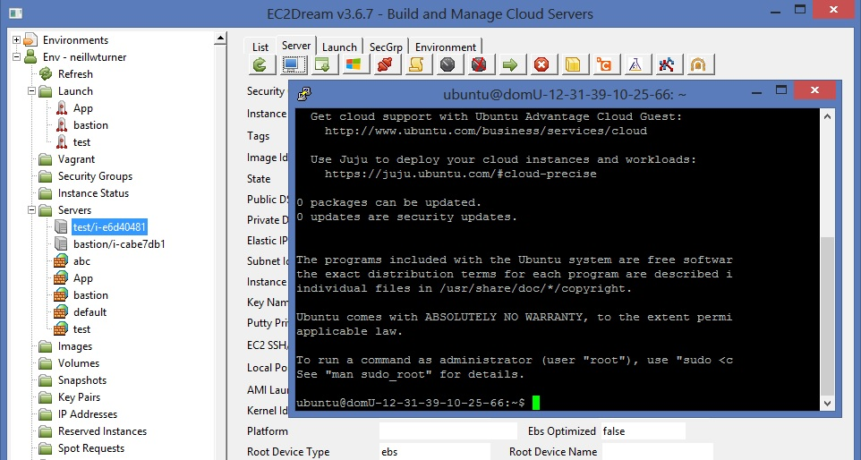
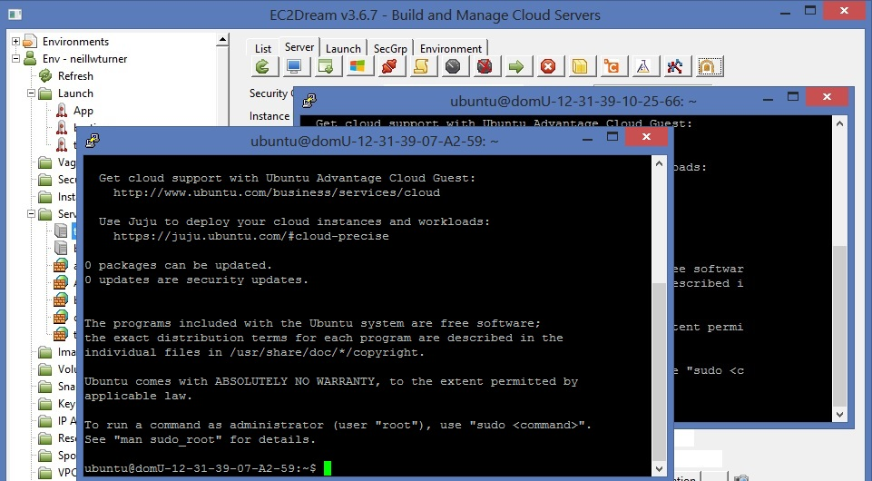
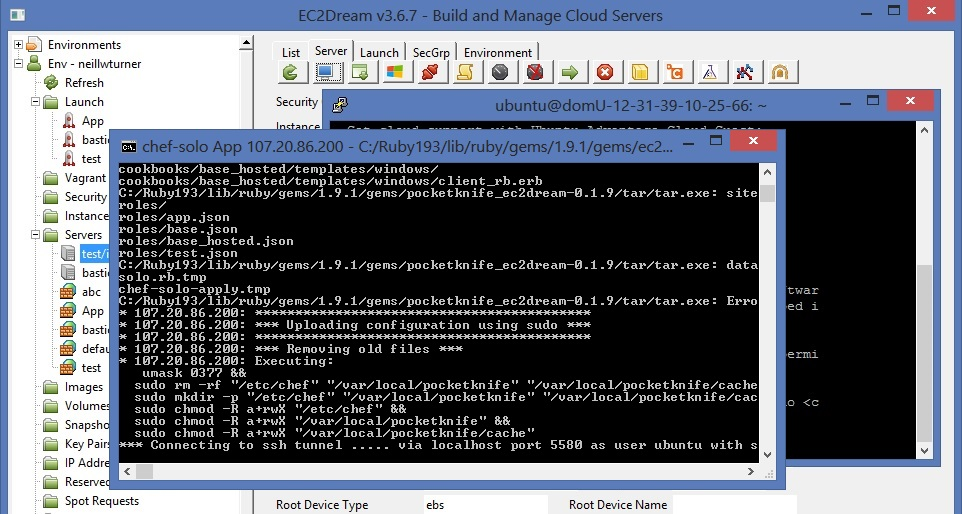

Using a Bastion Host to access servers in a VPC
A Bastion Host is a common way of providing access to servers that are not directly attached to the internet. SSH supports SSH tunnelling by creating an SSH tunnel via the Bastion server to the server. The tunnel is attached to a local port on your client. The the server can be accessed via the tunnel using the local port.Configure Bastion Server
A Bastion Server can be configured globally in the EC2Dream Environment tab.
and can also be overriden in the Launch profile or individual server by pressing the tunnel button next to the Local Port field on the server or launch tab.

Access a Server instance via the Bastion Host
1. Click on the server in the server tree and in the Server tab define a local port to use for the SSH tunnel (this must be unique between different servers)
2. first create an SSH Tunnel by pressing the tunnel button in the toolbar of the server tab.

3. then create an SSH to use the tunnel by pressing the terminal

Run Chef or Puppet via the Bastion Host
1. Click on the server in the server tree and in the Server tab define a local port and create the SSH Tunnel by pressing the tunnel button in the toolbar just as accessing a server using SSH via Bastion Host.2. Run chef and puppet over the the SSH Tunnel by pressing the chef
